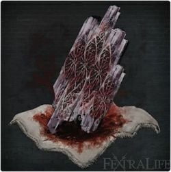
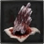

Blood Stone Chunk |
||||
|---|---|---|---|---|
|  | ||||
|
||||
Bloodstone Chunk is an upgrade Item in Bloodborne.
Blood Stone Chunk Usage
- Used to Fortify weapons to +9.
- You will need 3 to get to +7, 5 to +8, and 8 to +9 for a total of 16.
Location
- Can be bought from the Insight messenger bath shop (20 insight) after defeating The One Reborn (Patch Notes V1.09)
- Very rare drop from Cain's Servant in Cainhurst Castle (floor scrubbers etc), New Game + only
- Very rare drop from gargoyle enemies in Cainhurst Castle. (Gargoyles can appear in later chalice dungeons also)
- Very rare drop from hellhound dogs (come in pairs along with the sword-wielding flame witch) in chalice dungeons.
- Very rare drop from giants in chalice dungeons.
- Rare drop from the zombie werewolves in Yahar'gul, Unseen Village.
- Rare drop from the Giant in the Lecture Building.
- Rare drop from the blue eyed werewolves in the Upper Cathedral Ward.
- Rare drop from Keeper of the Old Lords in Defiled Chalice. (Layer 1 Boss)
- Rare drop from Bloodletting Beast in Great Pthumeru Ihyll Chalice (Layer 2 Boss)
- Common drop from Blood-Starved Beast in Sinister Lower Loran Root Chalice. (Layer 1)
- Common drop from Brainsucker boss in FRC Isz (huy83p9r) (Layer 1) lever is directly to the right and boss to the left.
- x1 Forbidden Woods, on a body in a small cave guarded by 3 snake men in the snake part of the woods. Follow the lamps/main path until the first Viper Pit.
- x1 Cainhurst Castle, balcony above the entrance.
- x1 Cainhurst Castle, on top of a small tower near the first gargoyle.
- x1 Cainhurst Castle, middle floor of the library on the opened window side.
- x2 Cainhurst Castle, dropped by Scurrying Beast on the top floor of the library.
- x1 Yahar'gul, Unseen Village, on body right by the "Yahar'gul, Unseen Village" lamp.
- x1 Yahar'gul, Unseen Village, on body before the second lamp, just before the stairs where a Lesser Amygdala shoots lasers at you.
- x2 Yahar'gul, Unseen Village, from Scurrying Beast straight after second lamp.
- x2 Yahar'gul, Unseen Village, from Scurrying Beast, jump through the window during elevator ride down from "Yahar'gul, Unseen Village" lamp.
- x1 Yahar'gul, Unseen Village, right after previous chunk on a body next to the bone werewolf.
- x2 Yahar'gul, Unseen Village, find the broken lamp, go outside to main street and turn left. On body of a snatcher in front of the large wagon.
- x2 Yahar'gul, Unseen Village, right next to previous chunk on the body of a snatcher, guarded by an Undead Amalgam.
- x2 Yahar'gul, Unseen Village, down the spiral staircase from the broken lamp, on body of a snatcher on the very bottom floor.
- x2 Yahar'gul, Unseen Village, down the spiral staircase from the broken lamp to the middle floor, on body of a snatcher in the cells near the path to Darkbeast Paarl.
- x1 Lecture Building 2nd Floor, by the melted students that spit/throw quicksilver liquid at you.
- x3 Nightmare of Mensis, from Scurrying Beast before the first lamp.
- x1 Nightmare of Mensis, follow the left path from the first lamp, on body next to 2nd rock thrower.
- x1 Nightmare of Mensis, follow the left path from the first lamp, on body to the left just before the castle door.
- x1 Nightmare of Mensis, guarded by two dogs, just before second elevator.
- x3 Nightmare of Mensis, from Scurrying Beast in the Micolash boss fight area. Go down the spiraling stairs after the first phase of the fight.
- x1 Nightmare of Mensis, on body before jumping down to finish Micolash in the Micolash boss fight area.
- x2 Nightmare of Mensis, after "Mergo's Loft: Middle" lamp. Right after the lamp next to crows and a dog.
- x2 Nightmare of Mensis, after "Mergo's Loft: Middle" lamp. On body before the first maneater pig, around corner to the left of the lower staircase.
- x3 Nightmare of Mensis, after "Mergo's Loft: Middle" lamp. From Scurrying Beast, jump through broken fence to the left of the first maneater pig.
- x2 Nightmare of Mensis, after "Mergo's Loft: Middle" lamp. Follow path after previous chunk, on body guarded by two Shadows.
- x2 Nightmare Frontier, dropped by large Scurrying Beast on the lower cliff, close to the Winter Lantern, just before the area leading to Amygdala.
- x2 Nightmare Frontier, dropped by large Scurrying Beast in the poison pools near the boss, close to the elevator shortcut.
- x2 Upper Cathedral Ward, from Scurrying Beast in the left corridor from the room with the chandelier.
- x2 Hunter's Nightmare, from Scurrying Beast at the entrance to the cave at the end of the river of blood, just before the Gatling Gun Hunter.
- x1 Hunter's Nightmare, on a corpse in the cave just past the aforementioned Gatling Gun Hunter.
- x1 Hunter's Nightmare, on a corpse in the cave just past the aforementioned Gatling Gun Hunter, nearer the Blood Starved Beast there.
- x2 Hunter's Nightmare, from Scurrying Beast just down the stairs past the Nightmare Church lamp.
- x4 Research Hall, from a pair of Scurrying Beasts in the main room, just past the elevator lamp.
- x2 Research Hall, on the top floor adjacent to the rafters, guarded by a crow.
- x2 Research Hall, from a Scurrying Beast located behind the chapel window pane, in the Lumenflower Gardens after acquiring the Balcony key.
- 1x Fishing Hamlet, guarded by an enemy in the second story of the house past the first lantern.
- 1x Fishing Hamlet, on a corpse near the first Shark Giant, hanging over a ledge behind a set of ruined houses on the left.
- 3x Fishing Hamlet, dropped by a Scurrying Beast in the first house on the left after leaving the Lighthouse Hut Lantern. Will drop into a pit with flammable jars.
- 2x Fishing Hamlet, as an item drop, immediately outside of the aforementioned house on the left.
- 1x Fishing Hamlet, as an item drop in the house immediately adjacent to the other chunks. House is heavily populated with enemies.
- 1x Fishing Hamlet, as an item on the ground at the end of the first Slug People area, to the right just before the cave leading to Brador and the elevator.
Farming Strategy
The fastest and simplest way to farm Blood Stone Chunks is through using false-depth chalice dungeons.
One such dungeon glyph is bej77ini, only requiring you to kill 2 bosses in the Pthumeru Chalice, then enter glyph pxmq3t98 and purchase the Sinister Pthumeru Ihyll Root Chalice. Once you have access to the dungeon, unlock the boss room, slay it, remake the dungeon and repeat.
Can also be farmed from the blue-eyed Scourge Beasts in Upper Cathedral Ward. The drop rate is about 1 in 8 drop rate with high discovery. It is recommended to use a weapon with long-reach that can attack through walls.
(but really, don't do this method if you have PS Plus)
Notes
| Weapon Upgrade Quantity | |
|---|---|
| +7 | 3 Blood Stone Chunks |
| +8 | 5 Blood Stone Chunks |
| +9 | 8 Blood Stone Chunks |
 Anonymous
AnonymousLate-game farming can be done pretty easily at the Lower Loran glyph zaxss2vc. The dungeon only has 4 enemies and the boss, Loran Silverbeast, can be killed very easily with a parry and a couple good whacks. Takes about 3 minutes, plus you get a load of blood echos. Boss has a good chance to drop 1-2 chunks.
- Anonymous
I've been trying to farm these from the enemies listed, in the locations listed, with an Item Discovery of 319, for about an hour each.
I've not gotten a single bloodstone chunk. I did, however, get more twin bloodstones than you can shake a lumenwood's weird head at.
My preferred farming method is in Yahar'gul, after Rom, starting from the Yahar'gul Chapel lantern. You dash out the side door (towards the Scurrying Beast spawn), turn right in front of the Amygdala and drop-roll down to dash past everything. Head into the building with the original lantern (been smashed now F) and down the first staircase, straight down the second set and below the floor. Head into the doorway and kill the malformed Scourgr Beast there, then pop back out and down the last set of stairs to the other jail area, kill the second Scourge Beast., and Bold Hunter's Mark.
Each of them has about a 1/10 chance of dropping a Chunk, in my experience (~250 item discovery). The run is about a minute, and since you don't have to wait for an elevator, along with higher drop rates compared to gargoyles, I believe it to be a solid farming method.
Of course, you could always run a dungeon with bosses that drop Chunks, and use the Insight gained per run to slowly pay for additional ones after beating One Reborn. The first two layers of glyph dz48cmwr have bosses that drop Chunks (Pig and Watchers) without being ungodly difficult, and you can basically speedrun to them, kill them, and remake the chalice.
- Anonymous
- Anonymous
These should've been purchasable with Blood Echoes after defeating Wet Nurse. Farming for them is tedious as hell since none of the non-chalice enemies drop them commonly. One of the worst design choices in Bloodborne imo.
- Anonymous
- Anonymous
- Anonymous
"If you have high enough cholesterol you can farm yourself for blood chunks"
- Anonymous
Very good strat here for Chunk Farming ( But you also need to be Patient aswell ). I'm in NG+ now running my Main Hunter BL204 , the Upper Cathedral Ward Blue eyed Werewolfs strat... What you wanna do is Unlock the Shortcut door leading outside to the Lamp... Then just simply rush to the Orphanage Door you unlocked prior to face the Werewolfs infront of you at the Ladder. ( An Extremely easy method to Kill them & also not get bothered by that Brainsucker on the Left tight corridor )... Ok so what you wanna do is Draw them back to the main Door u unlocked , up untill the exit peak.... Now the Optimal Route for my method is to use Cannon +10 ( A Cannon +10 with 2 Bone Marrow Ashes will Kill all 2-3 Wolfs in 2 shots with Bone Ashes buffs.... Even the Brainsucker will die immediately after the 1st Cannon Shot ). This is the best easiest method to Kill those for Chunks assuming you got good Discovery with Arcane aswell... I have 40 Arcane & a Baseline Discovery of 190 ( With the Eye Rune from Willem you should be well-above 230+ Discovery which will grant you a Chunk from 1 of those Wolfs aswell ). The other Route is to grab the werewolfs onto the Gate limit.. Then you'd wanna use a Long Range weapon , like a Riflespear or a Ludwig's Holy Blade ( With this Method if you wanna safely avoid the Brainsucker with whatever reason , grab some & use Blue Elixirs he wont aggro to you ). Also with Blue Elixirs used throwing a Pibble or Knifes is a good method to draw-out the wolfs on the Door.... Final Note , make sure that you dont have any Insights whatsoever here just to avoid loosing them from Brainsuckers ( Brainsuckers also drop Bullets for Cannon incase you run out of them ). What i did in NG+ is that i grabbed all Chunks in the Game , while got 60 Insights & bought like the 6th Blood Rock from the messengers ( Dont use Insights to Buy Chunks , as 1 is for 20 Insights that's not recommended just buy Blood Rocks when u stack up with Madman's knowledges , Great Ones Wisdoms & all 4 Umbilical Cords ). And goodluck , Also if bored & you haven't done any Chalices that are 4 Depths or 5 Depths ( Do those Depth 4's or 5 Chalices for the first time , as the Bosses in these Dungeons do drop 1-2 Chunks mainly all Bosses in those high Depth Chalices ). Specialy the Defiled/Cursed Ones. The Cannon Strategy in Upper Cathedral Ward should also lend you about 10 Chunks every 1 hour or so if lucky with good 200+ Discovery... And keep alot of Quick Silver Bullet Stocks with Bone Marrow Ashes , while also keep using Blood Sacrificing Bullets +5 they're useful aswell. ( I also have Evelyn +10 with Bone Marrow Ashes it also deals great damage against those Werewolfs incase your Short of Bullets & need to use Single Bullet Firearms... As long as you have good gems & 30+ Bloodtinge your fine here even in NG+ like i'm ).
- Anonymous
If you just want to max all weapons, you may as well get used to running the game, getting 30-40 per 45-60 minutes or so (75-90 minutes if you want the extra few levels from killing the moon presence, if you also want to max level)
- Anonymous
71 total blood chunks per play though including DLC. 4, 9+ weapons without farming.
- Anonymous
- Anonymous
The only thing I know to tell you guys is to remake base Isz and run it over and over. Insight should only be used to round off the final couple of chunks you may need. Otherwise, not worth it. It's honestly easier than running Upper Cathedral wolves over and over. Basically, pick your poison. Do you want to tediously farm the wolves, or sink more time into a dungeon to avoid the mind numbing repetition?
- Anonymous
CHALICE
Comfirmed (12/0/2020) DZ48CMWR (Pthumeru Ihill) this is a fallse depth. first boss (boar) drops 0-2. Happy Hunting!
- Anonymous
Just managed to upgrade all of my weapons to +10. It took tens of hours and several NG+ plus runs but I did it. You can do this gents. Happy Hunting.
- Anonymous
If these costed blood echoes, I would have so many right now.
- Anonymous
Honestly best advice on farming these is cursed chalices. Rock the milkweed rune in them alone and you activate a discovery stack from the curse that generates 1k discovery + another 1k discovery for every discovery rune equipped including the one activating this effect. Meaning 3 moons and milkweed jumps it to 5k and breaks any traditional caps on it also. In cases where you land watcher bosses in cursed dungeons each boss in that fight should generate a chunk each (at least when I do this it works) happy hunting.
- Anonymous
- Anonymous
Is the 20 insight for 1 blood chunk a joke? Lol, what were the devs smoking?
- Anonymous
Farming these wouldn't be such a pain if the lamps acted more like Dark Souls bonfires. One thing Bloodborne did worse than DS for sure.
- Anonymous
The most effortless way to farm chunks is killing the gargoyles at Cainhurst Castle. Warp to the first lamp of the level, take the elevator shortcut up and trace back the way you came the first time when you were clearing the castle, there should be 6 gargoyles to kill, after dispatching all of them use mark to reload and repeat. Due to the chunks rarity, at least 400 Discovery is recommended if you use this method. It may not be the fastest way to farm chunks, but it's easy and decent enough if you're tired of killing other stronger beasts (gargoyles are very easily killed, even with little caution)
- Anonymous
Tip: You can farm the blue-eyed werewolves in the Upper Cathedral Ward in relative safety after you open the shortcut back to the lantern. Walk from the lantern to the 'orphanage door,' and all the werewolves will be in front of you facing the staircase. Aggro them one at a time (pebbles, bullets, knives...) and lure them back to the door. They can't pass the door, which means you can cheese them with your weapon of choice. They can still hit you through the door, though, so be careful. And it still takes forever for chunks to drop. But still...less dangerous than charging in from the top of the stairs.
- Anonymous
- Anonymous
lmao all these people complaining about farming these*****s. y’all could never survive bloodborne or any of the souls games solo bruh bet y’all live off of beckoning people stop complaining. and farm the damn thing it’s supposed to be hard not easy. this isn’t something like fagnite or any other easy game out there bruh
Here's a pretty decent glyph. Not a lot of extra stuff, but a clear route and an easy boss. Usually drops 1-2 chunks with 242 discovery. I was able to get the route to the lever and then the boss down to 1 minute 48 seconds. Video: It's a short video, so I'm not gonna explain it here.
- Anonymous
Guys...you can get INFINITE chunks using the 3 scurrying beasts in the nightmare. 1 before ludwig and 2 as you enter research hall. I got over 200 in an hour. Not a dupe, it's the way the game loads new maps. Vids on YouTube
- Anonymous
Everyone *****ing lol just play the game NOT like a scrub and you'll be fine. I'm on ng7 and have 15 +10 weapons and 7 +10 firearms.
- Anonymous
I would buy Chunks for 5 Insight a piece but 20 is ridiculous! +9 to +10 costs 60 insight. +8 to +9 costs 160 insight. Who's the genius behind that?
- Anonymous
Wish you could combine earlier blood shards into one, like idk 4 shards for a twin, and like 10 twins for a chunk. Id be happy with that, but no! We have to farm them from late game enemies with not even that good a drpprate even at higu discovery! Best I've had is averaging one per upper cathderal ward run. All 3 eye runes, milkweed and 60 arcane at work, which gives me a droprate of about 20% considering there are 5 werewolves. Lots of work just to be unable to get a reliable droprate is a bummer.
- Anonymous
What sane person would ever go to the Upper Cathedral Ward to farm chunks? It's goddamn spooky in there.
- Anonymous
I fucking hate farming these, why can't i simply buy them with blood echos or combine twin blood shards? It just doesn't make any sense.
- Anonymous
If you want to farm these reliably and have gotten to depth 3 chalices, bosses from depth 3 chalices are capable of dropping chunks. They're significantly easier than the Depth 4 or 5 alternatives, and can drop you mid tier gems.
- Anonymous
The scurrying beast in Mergo’s Loft screwed me over by falling through the floor, I’m upset
- Anonymous
A good spot to farm these is glyph jemmjmpi
The lever is behind The ladder, you only have to kill 2 brain suckers ( 1 at The lever and 1 boss)
Pretty Quick and i dont know if The runes actually increase The amount dropped but using The 3 i usually drop 2
Maybe a bit too late but i wanted to share for people who might have picked up from psn giveaway
- Anonymous
The probability of being drop by blue-eyed wolves increases according to the level of "Discovery", right? Does anyone know what percentage of probabilities remains according to that level?
- Anonymous
https://www.youtube.com/watch?v=FDW_KYirKaE <--- time to be a farmer
- Anonymous
I'm on my first play through of the Old Hunters DLC, and I just reached the Research Hall. In the room are two Scurrying Beasts, both of which drop two Bloodstone Chunks for a total of four. I noticed this wasn't mentioned here, so I thought I'd share my discovery.
- Anonymous
- Anonymous
- Anonymous
The way this is all wrote is extremely bunched up and confusing.
- Anonymous
- Anonymous
- Anonymous
- Anonymous
If you don't want to use a the exploits then you are at a big disadvantage given the drops for chunks is so poor. Ive spent an afternoon farming to get two. I've given up now and accepted most of my things will stay around +6/7, I've only managed to +10 one weapon so far which feels odd for me!
- Anonymous
Are those monsters the one lurking outside in the area of Cainhurst lamp?
Good news for you guys ) Dungeon hellhounds drop them in 50% rate. But only if you have about 400 of discovery. I have 430 (50 arcane + eye runes). I cant confirm this increase on story levels, Im on NG+ and not there yet. So I have this F, R, Cursed dungeon with firedogs, with very little space to maneuver and unsafe environment, and surviving this encounter about 1/3 of the time. Please, if you know not cursed dungeon, with lamppost near this guys please share it )
- Anonymous
Is it just me but i gone to some locations and I didnt find the Scurrying Beast or didnt get the Chunk. For example "x2 from Scurrying Beast straight after second lamp in Yahar'gul, Unseen Village."
- Anonymous
- Anonymous
there's one in the Forbidden Woods where there's the two big snake masses
- Anonymous
According to this article there are a total of 43 Chunks to be found in one playthrough, if you dont get any from enemie drops. Thats one weapon to +10, one to +9 and one to +8 in one playthrough. Seems...reasonable?
- Anonymous
Those zombie werewolves in the Unseen village drop chunks as well, there's 3 of em total and you can always back stab em.
- Anonymous
I've only been able to get twin blood stone shards to drop of those enemys
- Anonymous
Does anyone know what level chalice dungeon these can be found in? I went to ng+ and didn't quite have enough to +9 my burial blade
- Anonymous
I found 4 Chunks in the Nightmare Frontier. Dropped by two big scurrying beasts down in the poison lakes.
Greetings Guardians
Most of you already know about this spot but in case a newcomer needs a good farming spot for upgrade materials, here it is: https://www.youtube.com/watch?v=RBC0NlUKUnE
The dog-like enemies that normally walk around with a Keeper[enemy designed like the dungeon boss] also drop chunks semi-regularly.
- Anonymous
- Anonymous
Appears in the insight messengers store after the defeat of The One Reborn(as of patch 1.04).
- Anonymous
So, I just beat and farmed The one reborn for a while, gathering insight to spend and whatnot, As well as souls... So I go to check out the insight store, restock my papers, ETC, And I saw the blood stone chunk available for purchase... For a WHOPPING 30 insight... Apiece
- Anonymous
Is it possible for Chalice dungeons to have chunks in chest or possibly random bodies, even only in higher leveled Chalices?
- Anonymous
- Anonymous
So I started farming and did a few dozen farming runs and I think it's safe to say that not having chunks in your inventory helps the drop-rate.
- Anonymous
"x1 Nightmare of Mensis, guarded by two dogs, just before second elevator." - it i s actually AFTER the second elevator. Unless you are counting the return elevator shortcut as the second, in which case you should probably say the "return elevator" or the "shortcut to Micolash"
- Anonymous
I've tried farming the Zombie Beasts in the Unseen Village and the Blue eyed beasts in the upper cathedral ward whilst having the eye and kin covenant runes equipped but all they are dropping are twin blood shards (both), beast pellet (zombies) and bloodstone shards (blue eyes). I'm working my way through the chalices dungeons atm as I've put them off since growing bored with them back in May and would appreciate a glyph suggestion and it's requirements for a chalice that has a good stock/drop rate of these.
- Anonymous
I dont seem to get the chunks by the insight bath with my one character. I can with another character. Help please?
- Anonymous
Fastest way: from Hunters Dream, go to Yahar'gul, Unseen Village lamp. Go to elevator, leading you to lower location, but drop out in middle way. Get a rid of dogs, and backstab undead beast (1st possible loot), go back to small shrine with glowing bath, use it for shortcut. Go kill Chime Maiden (just because she is annoying), go back to glowing bath, and take another route. You will meet another undead beast, turned its back to you (2nd possible loot). Than go inside building against bridge with marskman, and go downstairs to find another conveniently placed undead beast (3rd possible loot). Go to Hipogean Gaol (those skull things should not be problem to you atm). Go to prison, lowest floor, and kill beast here (4th possible loot). After that, go to room midway on spiral stairs, and kill final, fifth beast. After this, you can simply sprint to Darkbeast Paarl lamp to repeat.
- Anonymous
So, below I read that insight makes chunks drop more. So I tried it and got my Insight to 90. But this is where things differs. It DOES make chunks drop more, but for me I only one, max two chunks drops from each run. The reason is "probably" a persons level. When you are over leveled for a certain area the drops will lessen. This is not normally a bother but with chunks it's noticeable. To summarize: Chunks drops when you have Eye runes. + high insight and LOW level. The higher level you are the less chunks drops.
- Anonymous
The way to buy chunks at the bath messengers has been deleted. Why? I know we can buy some after completed a chalice dungeon but I can't remember wich one.
- Anonymous
- Anonymous
Guys, it seems like insight VERY SERIOUSLY affects chunk drop rate. I went on a chunk farming route with wolves, had 3 eyes rune equipped and with 24 arcane had 370 discovery. Of 10 runs I only got two chunks. That time I had 30 insight on me. Then I consumed all madman\wisdom items I got and topped my insight to 88 Of the next 10 runs I got 15!!! chunks. It was chunk literally every drop, sometimes two. One run was without chunks but the next one i got 3! on one run. I DO NOT believe this could be a coincidence!!!! Hope someone can check it from your side as well. As for me, I can assure I won't let those leeches to suck\spend my insight to check if I return to poor drop rate. Current farming allows me to up a weapon from 6 to 9 within 15 minutes actually, that's not really long to up all existent weapons!
- Anonymous
I found Blood Chunk dropped by Scurrying Beast near Old Hunter summoning sign (before Ludwig Fight) Not sure how many though but at least 2x I believe.
- Anonymous
Only 242 discovery. idk if that matters bc it's a boss but I still had both my eye runes on...hoping to get the third after I beat this and get the root!
- Anonymous
Someone did around a 1000 runs on Reddit and cataloged the results. He analyzed the data and came to the conclusion that Discovery doesn't do diddly squat.
- Anonymous
The quickest way for me to get BSC's is to just wait around in Lower Loran Chalice Dungeon layer 1 and ring the Resonant Bell. The Loran Silverbeast is an easy boss to kill and usually gives 2 Chunks.
- Anonymous
Anyone got a glyph for an earlyish chalice dungeon with maybe a chest of these or something?
- Anonymous
there is 1 more chunk in cainhurst castle, on a dead body on the second floor balcony of the library.


The fastest farming method by far is the scurrying beast exploit between the research hall and nightmare church lamps. Nets about 100 chunks per hour. It can only be done once per NG and if you have’nt killed the beasts yet though. Search youtube for tutorial.
34
+10
-1